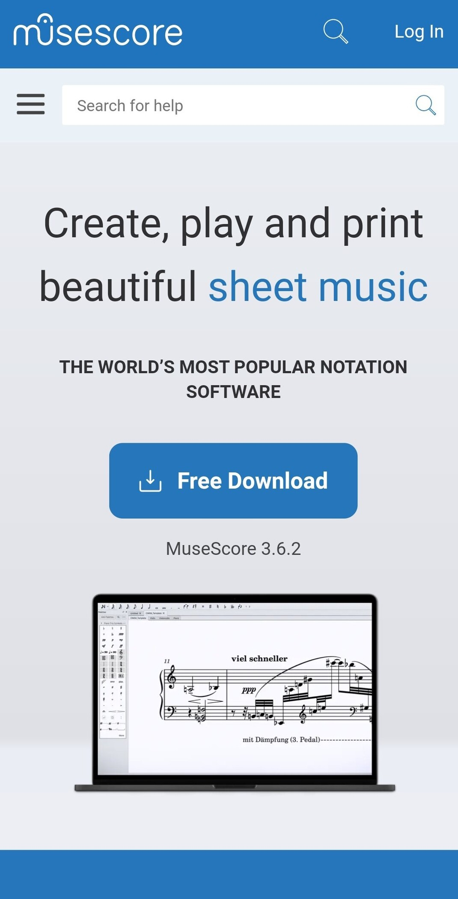
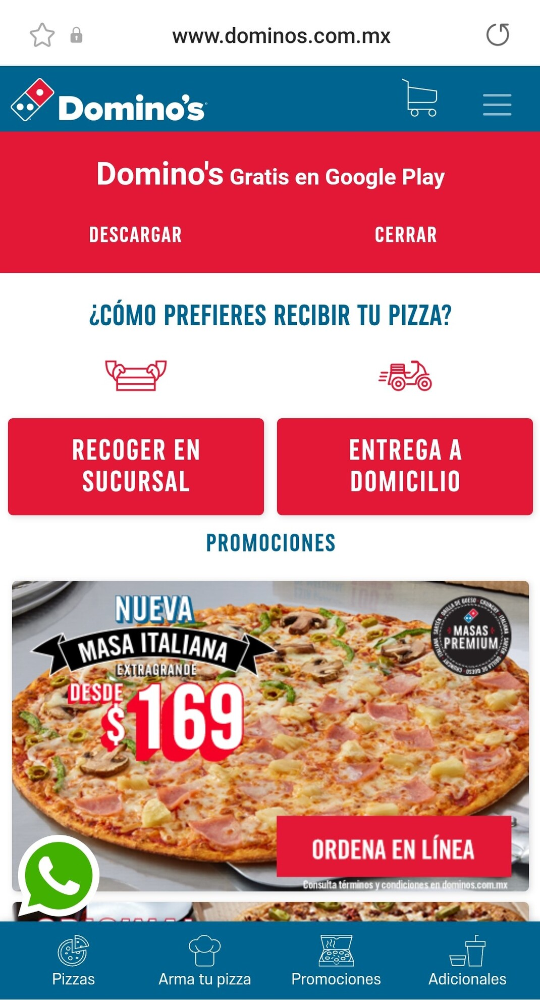
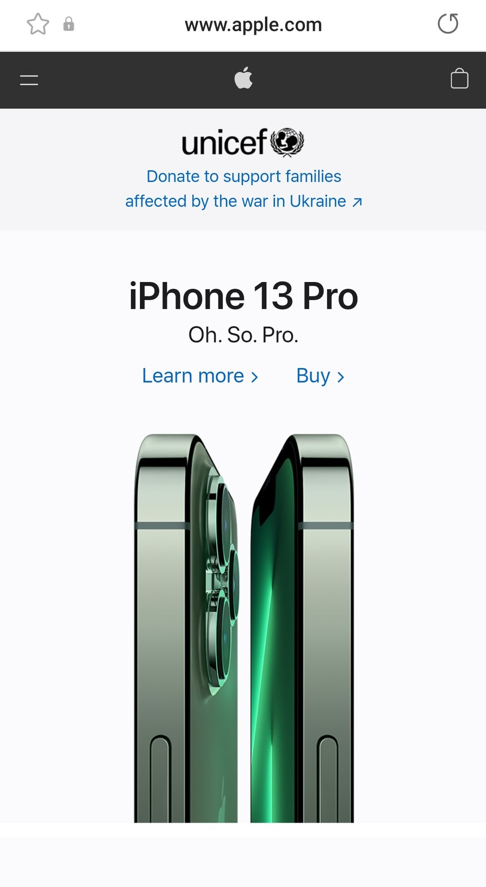

White Space and Clean Design
Musescore
I consider that this website follows a white space and clean design principles because it doesn't have any distracting element that makes us wonder what is the purpose of the website. The white spaces and aligning make the web page readable and give it a sense of direction to the web page. They also give it a neat and uniform design that is pleasing to the eye.
PARC: Contrast
Domino's Pizza
Domino’s Pizza website exemplifies how a website with good contrast enhances the readability and make easy finding the most important elements a website wants to show. Good contrast helps us to go through the web page faster and the experience become smoother. For example, the contrast between red and white makes it easier to read the text on the site, also the text found on the page has different sizes highlighting elements like “order online” “Delivery” important things that anyone who wants to order a pizza online looks for.
Visual Hierarchy
Apple
When I saw this website, I knew what it was about because of the hierarchy principle the website follows. In the screenshot we can see that the element that has more presence is the photo of an iPhone 13 Pro, the name of the cellphone is what follows, and at last some links to learn more about the iPhone and a link to buy it.